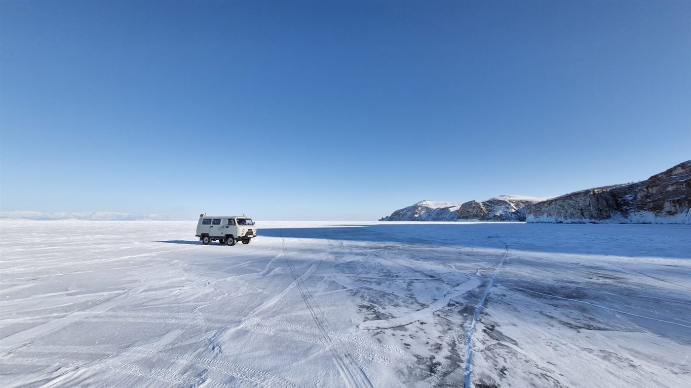
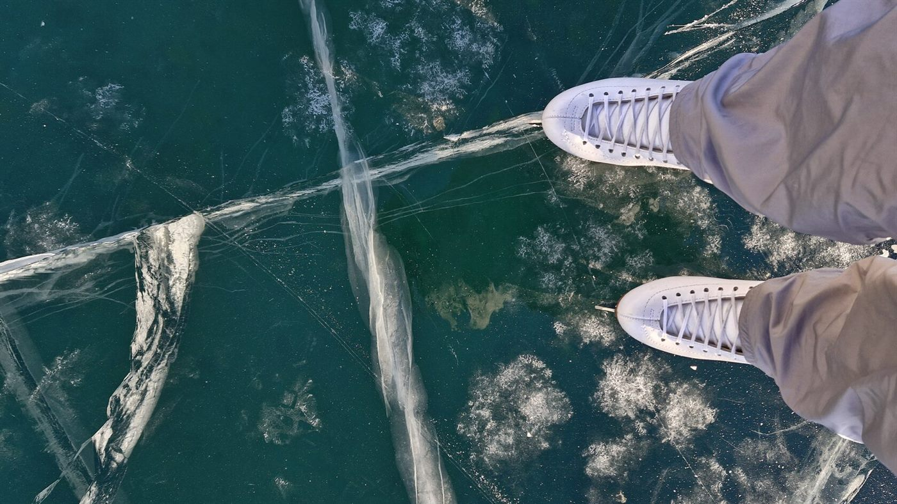
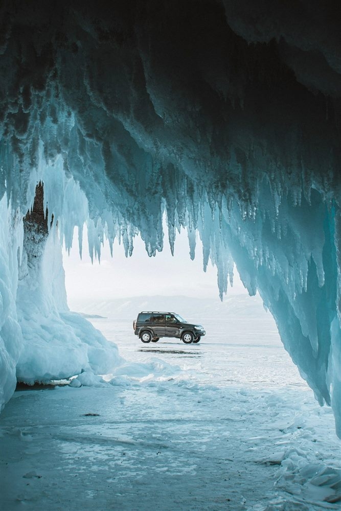
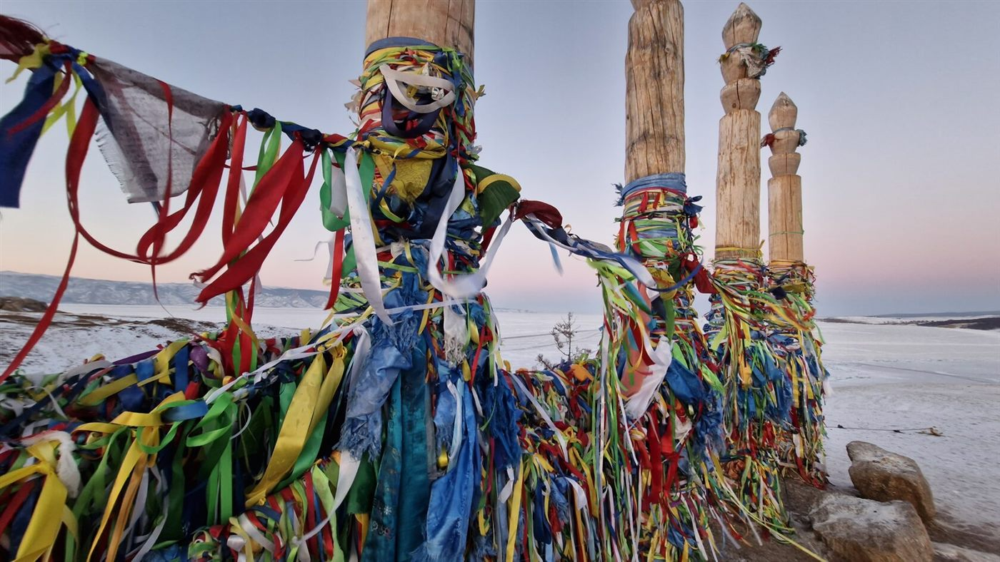
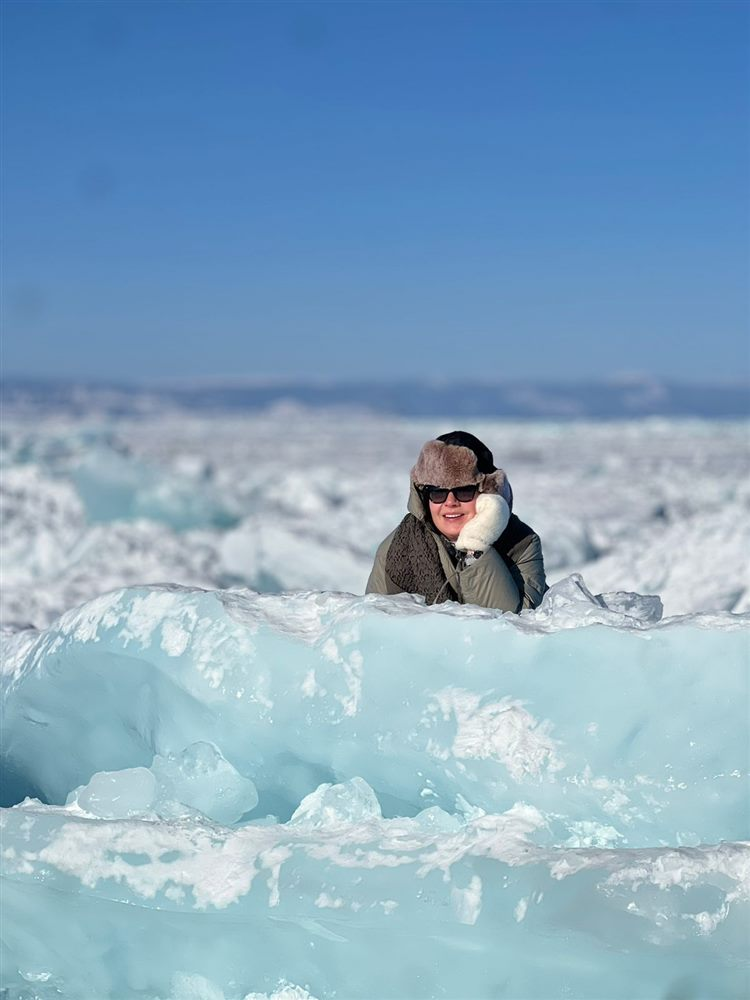
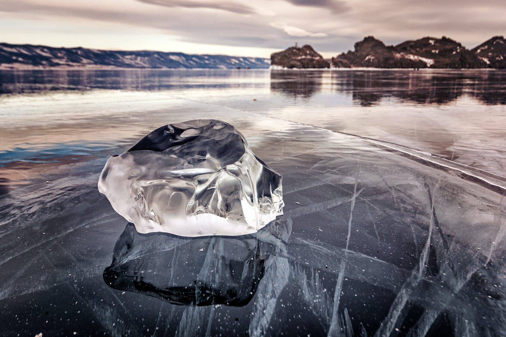

1 день · Иркутск
Прилет в Иркутск, самостоятельный трансфер в отель и размещение. День остается спокойным: можно восстановиться после перелета и подготовиться к выезду на Байкал.
- Отель
- отель 4* в Иркутске
- Питание
- без питания

Маршрут построен вокруг зимнего Байкала: Иркутск, дорога на Ольхон, ледовые переправы, север острова, мыс Хобой, остров Огой, гроты, торосы и прозрачный лед Малого Моря.
Формат рассчитан на небольшую группу до 8 человек. В программе есть внедорожник УАЗ, хивус, пикник на льду, бурятская кухня по дороге, обзорная экскурсия по Иркутску и свободное время для прогулки или бани на берегу Байкала.

Прилет в Иркутск, самостоятельный трансфер в отель и размещение. День остается спокойным: можно восстановиться после перелета и подготовиться к выезду на Байкал.

Встреча группы в холле отеля и дорога на Ольхон. По пути - шаманский барисан, буддийский дацан и остановка с бурятской кухней. Далее ледовая переправа на УАЗе или хивусе и размещение в Хужире.

Выезд на УАЗе к северной точке острова Ольхон. Остановки у Сагаан-Хушуна, островов Харанцы и Ёдор, ледовые гроты, торосы и пикник на льду у Большого Байкала.

Маршрут на хивусе к южной части Малого Моря и острову Огой. В программе панорамные виды, ступа Просветления, ледяные наплески и свободное время для прогулки или бани на берегу.

Выезд из Хужира в Иркутск, остановка на обед по дороге. После возвращения - обзорная экскурсия по Иркутску продолжительностью около 2,5-3 часов и размещение в отеле 4*.
Завтрак, освобождение номеров и самостоятельный трансфер в аэропорт. Завершение программы.

Этот маршрут подойдет тем, кто едет на Байкал именно за зимней фактурой: голубой лед, гроты, торосы, ледовые дороги, мощные виды Ольхона и драйвовые переезды. Программа активная, но без перегруза: каждый день дает отдельное впечатление и оставляет место для живого путешествия.